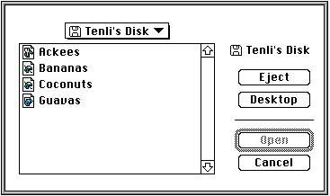

Opening Documents Within an Application
When present in the operating environment, Macintosh Easy Open modifies the Standard File Package so that its file-opening dialog boxes display not only the file types your application can open by itself but also the file types that can be translated into
those your application can open. The result is that users can open more documents using your application than they previously could. Figure 7-6 shows the enhanced file-opening dialog box.Figure 7-6 The enhanced file-opening dialog box

In the case shown in Figure 7-6, the application can open SurfWriter documents without translating them. In addition, Macintosh Easy Open can translate SurfDB and SurfPaint documents to SurfWriter documents; as a result, any SurfDB and SurfPaint documents in the current directory are displayed in the dialog box.If the user selects a document that your application can open only after some sort of translation, Macintosh Easy Open displays the translation progress dialog box (shown in Figure 7-4) and translates the document into a format that your application recognizes.
Notice in Figure 7-6 that the small, black-and-white generic document icons (of type
'SICN') usually displayed by the Standard File Package have been replaced by small color icons (displayed in this figure in grayscale) that are specific to each type of document. When Macintosh Easy Open is present, the Standard File Package uses small color icons (of type'ics4'or'ics8', according to the current bit depth of the display device) to show document types. This allows the user to distinguish more easily between documents of different file types and provides a clue to which documents belong to your application and which belong to some other application but can be opened after translation.
- IMPORTANT
- To have the Standard File Package display your application's small color icons in the file-opening dialog box, your application's resource fork should contain the appropriate small color icons (of type
'ics4'or'ics8'). In addition, if your application uses custom Standard File Package file-opening dialog boxes, your resource fork should contain a dialog color table resource (of type'dctb') whose resource ID is the same as the resource ID of the dialog box. See the chapter "Finder Interface" in Inside Macintosh: Macintosh Toolbox Essentials for complete information about small color icons; see the chapter "Dialog Manager" in that same book for information about dialog color tables.